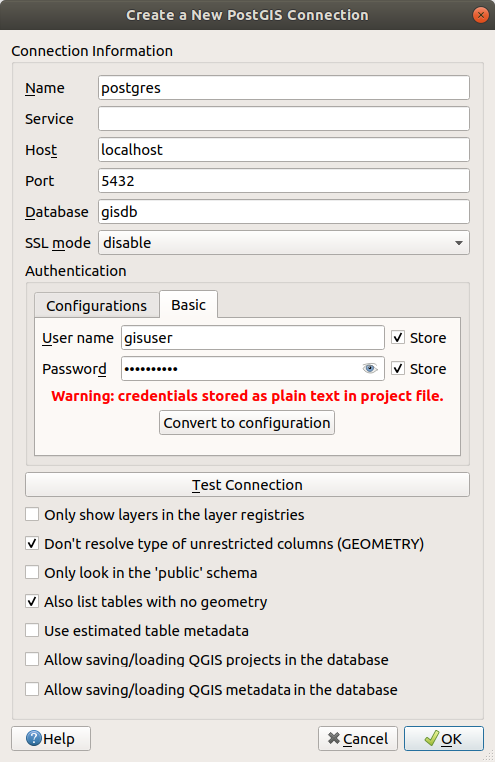
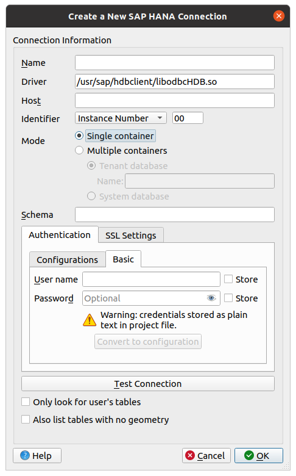

As part of an Open Source Software ecosystem, QGIS is built upon different
libraries that, combined with its own providers, offer capabilities to read
and often write a lot of formats:
Vector data formats include GeoPackage, GML, GeoJSON, GPX, KML,
Comma Separated Values, ESRI formats (Shapefile, Geodatabase…),
MapInfo and MicroStation file formats, AutoCAD DWG/DXF,
GRASS and many more…
Read the complete list of supported vector formats.
Raster data formats include GeoTIFF, JPEG, ASCII Gridded XYZ,
MBTiles, R or Idrisi rasters, GDAL Virtual, SRTM, Sentinel Data,
ERDAS IMAGINE, ArcInfo Binary Grid, ArcInfo ASCII Grid, and
many more…
Read the complete list of supported raster formats.
Database formats include PostgreSQL/PostGIS, SQLite/SpatiaLite, Oracle,
MS SQL Server, SAP HANA, MySQL…
Web map and data services (WM(T)S, WFS, WCS, CSW, XYZ tiles, ArcGIS
services, …) are also handled by QGIS providers.
See Working with OGC / ISO protocols for more information about some of these.
You can read supported files from archived folders and use QGIS native
formats such as QML files (QML - The QGIS Style File Format) and virtual and memory
layers.
More than 80 vector and 140 raster formats are supported by
GDAL and QGIS native providers.
Note
Not all of the listed formats may work in QGIS for various reasons.
For example, some require external proprietary libraries, or the GDAL/OGR
installation of your OS may not have been built to support the format you
want to use. To see the list of available formats, run the command line
ogrinfo--formats (for vector) and gdalinfo--formats (for raster),
or check the Settings ► Options ► GDAL menu in QGIS.
In QGIS, depending on the data format, there are different tools to open a
dataset, mainly available in the Layer ► Add Layer ► menu
or from the Manage Layers toolbar (enabled through
View ► Toolbars menu).
However, all these tools point to a unique dialog, the Data Source
Manager dialog, that you can open with the Open Data Source Manager button, available on the Data Source
Manager Toolbar, or by pressing Ctrl+L.
The Data Source Manager dialog (Fig. 15.1)
offers a unified interface to open file-based data as well as databases or
web services supported by QGIS.
Beside this main entry point, you also have the DB Manager plugin that offers advanced capabilities to analyze and
manipulate connected databases.
More information on DB Manager capabilities can be found in DB Manager Plugin.
There are many other tools, native or third-party plugins, that help you
open various data formats.
This chapter will describe only the tools provided by default in QGIS for
loading data.
It will mainly focus on the Data Source Manager dialog but
more than describing each tab, it will also explore the tools based on the data
provider or format specificities.
The Browser is one of the main ways to quickly and easily
add your data to projects. It’s available as:
a Data Source Manager tab, enabled pressing the
Open Data Source Manager button (Ctrl+L);
as a QGIS panel you can open from the menu View ► Panels
(or Settings ► Panels) or by pressing Ctrl+2.
In both cases, the Browser helps you navigate in your file system
and manage geodata, regardless the type of layer (raster, vector, table),
or the datasource format (plain or compressed files, databases, web services).
At the top of the Browser panel, you find some buttons that help you to:
Add Selected Layers: you can also add data to the map
canvas by selecting Add selected layer(s) from the layer’s context menu;
Refresh the browser tree;
Filter Browser to search for specific data. Enter a search
word or wildcard and the browser will filter the tree to only show paths to
matching DB tables, filenames or folders – other data or folders won’t be
displayed. See the Browser Panel(2) example in Fig. 15.2.
The comparison can be case-sensitive or not. It can also be set to:
Normal: show items containing the search text
Wildcard(s): fine tune the search using the ? and/or *
characters to specify the position of the search text
Regular expression
Collapse All the whole tree;
Enable/disable properties widget: when toggled on,
a new widget is added at the bottom of the panel showing, if applicable,
metadata for the selected item.
The entries in the Browser panel are organised
hierarchically, and there are several top level entries:
Favorites where you can place shortcuts to often used locations
Project Home: for a quick access to the folder in which (most of)
the data related to your project are stored. The default value is the directory
where your project file resides.
Home directory in the file system and the filesystem root directory.
Connected local or network drives
Then comes a number of container / database types and service protocols,
depending on your platform and underlying libraries:
The browser supports drag and drop within the browser, from the browser to
the canvas and Layers panel, and from the Layers panel
to layer containers (e.g. GeoPackage) in the browser.
Project file items inside the browser can be expanded, showing the full
layer tree (including groups) contained within that project.
Project items are treated the same way as any other item in the browser,
so they can be dragged and dropped within the browser (for example to
copy a layer item to a geopackage file) or added to the current project
through drag and drop or double click.
The context menu for an element in the Browser panel is opened
by right-clicking on it.
For file system directory entries, the context menu offers the following:
New ► to create in the selected entry a:
Directory…
GeoPackage…
ShapeFile…
Add as a Favorite: favorite folders can be renamed
(Rename favorite…) or removed (Remove favorite) any time.
Hide from Browser: hidden folders can be toggled to visible from
the Settings ► Options ► Data Sources ► Hidden browser
paths setting
Fast Scan this Directory
Open Directory
Open in Terminal
Properties…
Directory Properties…
For leaf entries that can act as layers in the project, the context
menu will have supporting entries.
For example, for non-database, non-service-based vector, raster and
mesh data sources:
Export Layer ► To File…
Add Layer to Project
Layer Properties
Manage ► Rename “<name of file>”… or
Delete “<name of file>”…
Show in Files
File Properties
In the Layer properties entry, you will find (similar
to what you will find in the
vector and
raster layer properties once
the layers have been added to the project):
Metadata for the layer.
Metadata groups: Information from provider (if possible,
Path will be a hyperlink to the source),
Identification, Extent, Access,
Fields (for vector layers), Bands (for raster layers),
Contacts, Links (for vector layers),
References (for raster layers), History.
A Preview panel
The attribute table for vector sources (in the Attributes
panel).
To add a layer to the project using the Browser:
Enable the Browser as described above.
A browser tree with your file system, databases and web services is
displayed.
You may need to connect databases and web services before they appear
(see dedicated sections).
Find the layer in the list.
Use the context menu, double-click its name, or drag-and-drop it
into the map canvas.
Your layer is now added to the Layers panel and
can be viewed on the map canvas.
Tip
Open a QGIS project directly from the browser
You can also open a QGIS project directly from the Browser
panel by double-clicking its name or by drag-and-drop into the map canvas.
Once a file is loaded, you can zoom around it using the map navigation tools.
To change the style of a layer, open the Layer Properties dialog
by double-clicking on the layer name or by right-clicking on the name in the
legend and choosing Properties from the context menu. See
section Symbology Properties for more information on setting symbology for
vector layers.
Right-clicking an item in the browser tree helps you to:
for a file or a table, display its metadata or open it in your project.
Tables can even be renamed, deleted or truncated.
for a folder, bookmark it into your favourites or hide it from the browser
tree. Hidden folders can be managed from the Settings ►
Options ► Data Sources tab.
manage your spatial bookmarks: bookmarks can be
created, exported and imported as XML files.
create a connection to a database or a web service.
refresh, rename or delete a schema.
You can also import files into databases or copy tables from one schema/database
to another with a simple drag-and-drop. There is a second browser panel
available to avoid long scrolling while dragging. Just select the file and
drag-and-drop from one panel to the other.
The DB Manager Plugin is another tool
for integrating and managing spatial database formats supported by
QGIS (PostGIS, SpatiaLite, GeoPackage, Oracle Spatial, MS SQL Server, Virtual
layers). It can be activated from the
Plugins ► Manage and Install Plugins… menu.
The DB Manager Plugin provides several features:
connect to databases and display their structure and contents
preview tables of databases
add layers to the map canvas, either by double-clicking or drag-and-drop.
add layers to a database from the QGIS Browser or from another database
create SQL queries and add their output to the map canvas
Beside the Browser Panel and the DB Manager, the main tools provided by QGIS
to add layers, you’ll also find tools that are specific to data providers.
Note
Some external plugins also provide tools to open specific
format files in QGIS.
Open the layer type tab in the Data Source Manager
dialog, ie click the Open Data Source Manager
button (or press Ctrl+L) and enable the target tab or:
for vector data (like GML, ESRI Shapefile, Mapinfo and DXF layers):
press Ctrl+Shift+V, select the Layer ► Add Layer ►Add Vector Layer menu option or
click on the Add Vector Layer toolbar button.
for raster data (like GeoTiff, MBTiles, GRIdded Binary and DWG layers):
press Ctrl+Shift+R, select the Layer ► Add Layer ►Add Raster Layer menu option or
click on the Add Raster Layer toolbar button.
Navigate the file system and load a supported data source.
More than one layer can be loaded at the same time by holding down the
Ctrl key and clicking on multiple items in the dialog or holding down
the Shift key to select a range of items by clicking on the first and last
items in the range.
Only formats that have been well tested appear in the formats filter.
Other formats can be loaded by selecting Allfiles (the top item
in the pull-down menu).
Press Open to load the selected file into Data
Source Manager dialog
Press Add to load the file in QGIS and display them in the map view.
When adding vector datasets containing multiple layers, the
Select Items to Add dialog will appear. In this dialog, you can
choose the specific layers from your dataset that you want to add.
Also, under Options you can choose to:
Add layers to a group
Show system and internal tables
Show empty vector layers.
Fig. 15.7 shows QGIS after loading the alaska.shp file.
For loading vector and raster files the GDAL driver offers to define open
actions. These will be shown when a file is selected. Options are described
in detail on https://gdal.org/drivers/vector/, https://gdal.org/drivers/raster
and if a file is selected in QGIS, a text with hyperlink will directly
lead to the documentation of the selected file type.
Note
Because some formats like MapInfo (e.g., .tab) or Autocad (.dxf)
allow mixing different types of geometry in a single file, loading such
datasets opens a dialog to select geometries to use in order to have one
geometry per layer.
The Add Vector Layer and Add Raster
Layer tabs allow loading of layers from source types other than File:
You can load specific vector formats like ArcInfoBinaryCoverage,
UK.NationalTransferFormat, as well as the raw TIGER format of the
USCensusBureau or OpenfileGDB. To do that, you select
Directory as Source type.
In this case, a directory can be selected in the dialog after pressing
…Browse.
With the Database source type you can select an
existing database connection or create one to the selected database type.
Some possible database types are ODBC, EsriPersonalGeodatabase,
MSSQLServer as well as PostgreSQL or MySQL .
Pressing the New button opens the
Create a New OGR Database Connection dialog whose parameters
are among the ones you can find in Creating a stored Connection.
Pressing Open lets you select from the available tables, for
example of PostGIS enabled databases.
The Protocol: HTTP(S), cloud, etc. source type
opens data stored locally or on the network, either publicly accessible,
or in private buckets of commercial cloud storage services.
Supported protocol types are:
HTTP/HTTPS/FTP, with a URI and, if required,
an authentication.
Cloud storage such as AWSS3, GoogleCloudStorage, MicrosoftAzureBlob, AlibabaOSSCloud, OpenStackSwiftStorage.
You need to fill in the Bucket or container and the
Object key.
service supporting OGC WFS3 (still experimental),
using GeoJSON or GEOJSON-NewlineDelimited format or based on
CouchDB database.
A URI is required, with optional authentication.
For all vector source types it is possible to define the Encoding or
to use the Automatic ► setting.
A mesh is an unstructured grid usually with temporal and other components.
The spatial component contains a collection of vertices, edges and faces
in 2D or 3D space. More information on mesh layers at Working with Mesh Data.
To add a mesh layer to QGIS:
Open the Data Source Manager dialog, either by selecting it
from the Layer ► menu or clicking the Open Data Source Manager button.
Enable the Mesh tab on the left panel
Press the …Browse button to select the file.
Various formats are supported.
Select the file and press Add.
The layer will be added using the native mesh rendering.
If the selected file contains many mesh layers, then you’ll be prompted
with a dialog to choose the sublayers to load.
Do your selection and press OK and the layers are loaded with
the native mesh rendering. It’s also possible to load them within a group.
Delimited text files (e.g. .txt, .csv, .dat,
.wkt) can be loaded using the tools described above.
This way, they will show up as simple tables.
Sometimes, delimited text files can contain coordinates / geometries
that you could want to visualize.
This is what Add Delimited Text Layer
is designed for.
Click the Open Data Source Manager icon to
open the Data Source Manager dialog
Enable the Delimited Text tab
Select the delimited text file to import (e.g., qgis_sample_data/csv/elevp.csv)
by clicking on the …Browse button.
In the Layer name field, provide the name to use for
the layer in the project (e.g. Elevation).
Configure the settings to meet your dataset and needs, as explained below.
Once the file is selected, QGIS attempts to parse the file with the most
recently used delimiter, identifying fields and rows. To enable QGIS to
correctly parse the file, it is important to select the right delimiter.
You can specify a delimiter by choosing between:
CSV (comma separated values) to use the
comma character.
Regular expression delimiter and enter text
into the Expression field.
For example, to change the delimiter to tab, use \t (this is used in
regular expressions for the tab character).
Custom delimiters, choosing among some predefined
delimiters like comma, space, tab, semicolon, … .
Some other convenient options can be used for data recognition:
Number of header lines to discard: convenient when you want to
avoid the first lines in the file in the import, either because those are
blank lines or with another formatting.
First record has field names: values in the first
line are used as field names, otherwise QGIS uses the field names
field_1, field_2…
Detect field types: automatically recognizes the field
type. If unchecked then all attributes are treated as text fields.
Decimal separator is comma: you can force
decimal separator to be a comma.
Trim fields: allows you to trim leading and trailing
spaces from fields.
Discard empty fields.
Custom boolean literals: allows you to add a custom couple of
string that will be detected as boolean values.
QGIS tries to detect the field types automatically (unless
Detect field types is not checked) by examining
the content of an optional sidecar CSVT file (see:
GeoCSV specification)
and by scanning the whole file to make sure that all values can actually
be converted without errors, the fall-back field type is text.
The detected field type appears under the field name in sample data preview table
and can be manually changed if necessary.
The following field types are supported:
Boolean case-insensitive literal couples that are interpreted as boolean values are
1/0, true/false, t/f, yes/no
WholeNumber(integer)
WholeNumber(integer-64bit)
DecimalNumber: double precision floating point number
Once the file is parsed, set Geometry definition to
Point coordinates and provide the X
field, Y field, Z field (for 3-dimensional data)
and M field (for the measurement dimension) if the layer is of
point geometry type and contains such fields. If the coordinates
are defined as degrees/minutes/seconds, activate the
DMS coordinates checkbox.
Provide the appropriate Geometry CRS using the Select CRS widget.
Well known text (WKT) option if the spatial
information is represented as WKT: select the Geometry field
containing the WKT geometry and choose the approriate Geometry
field or let QGIS auto-detect it.
Provide the appropriate Geometry CRS using the Select CRS widget.
If the file contains non-spatial data, activate No
geometry (attribute only table) and it will be loaded as an ordinary table.
Use spatial index to improve the performance of
displaying and spatially selecting features.
Use subset index to improve performance of subset
filters (when defined in the layer properties).
Watch file to watch for changes to the file by other
applications while QGIS is running.
At the end, click Add to add the layer to the map.
In our example, a point layer named Elevation is added to the project
and behaves like any other map layer in QGIS.
This layer is the result of a query on the .csv source file
(hence, linked to it) and would require
to be saved in order to get a spatial layer on disk.
DXF and DWG files can be added to QGIS by simple drag-and-drop
from the Browser Panel.
You will be prompted to select the sublayers you would like to add
to the project. Layers are added with random style properties.
Note
For DXF files containing several geometry types (point, line and/or
polygon), the name of the layers will be generated as
<filename.dxf> entities <geometry type>.
To keep the dxf/dwg file structure and its symbology in QGIS, you may want to
use the dedicated
Project ► Import/Export ► Import Layers from DWG/DXF…
tool which allows you to:
import elements from the drawing file into a GeoPackage database.
add imported elements to the project.
In the DWG/DXF Import dialog, to import the drawing file
contents:
Input the location of the Source drawing, i.e. the DWG/DXF drawing
file to import.
Specify the coordinate reference system of the data in the drawing file.
Input the location of the Target package, i.e. the GeoPackage file
that will store the data. If an existing file is provided, then it will be
overwritten.
Choose how to import blocks with the dedicated combobox:
Expand Block Geometries: imports the blocks in the drawing file as normal elements.
Expand Block Geometries and Add Insert Points: imports the blocks in the drawing file as normal elements and adds the insertion point as a point layer.
Add Only Insert Points: adds the blocks insertion point as a point layer.
Check Use curves to promote the imported layers
to a curved geometry type.
Use the Import button to import the drawing into the destination
GeoPackage file.
The GeoPackage database will be automatically populated with the
drawing file content.
Depending on the size of the file, this can take some time.
After the .dwg or .dxf data has been imported into the
GeoPackage database, the frame in the lower half of the dialog is
populated with the list of layers from the imported file.
There you can select which layers to add to the QGIS project:
At the top, set a Group name to group the drawing files
in the project. By default this is set to the filename of the source drawing file.
Check layers to show: Each selected layer is added to an ad hoc group which
contains vector layers for the point, line, label and area features of the
drawing layer.
The style of the layers will resemble the look they originally had
in *CAD.
Choose if the layer should be visible at opening.
Checking the Merge layers option places all
layers in a single group.
The OpenStreetMap project is popular because in many countries
no free geodata such as digital road maps are available.
The objective of the OSM project is to create a free editable
map of the world from GPS data, aerial photography and local
knowledge.
To support this objective, QGIS provides support for OSM data.
Using the Browser Panel, you can load an .osm file to the
map canvas, in which case you’ll get a dialog to select sublayers based on the
geometry type.
The loaded layers will contain all the data of that geometry type
in the .osm file, and keep the osm file data structure.
The first time you load data from a SpatiaLite
database, begin by:
clicking on the Add SpatiaLite Layer toolbar
button
selecting the Add SpatiaLite Layer…
option from the Layer ► Add Layer menu
or by typing Ctrl+Shift+L
This will bring up a window that will allow you either to connect to a
SpatiaLite database already known to QGIS (which you choose from the
drop-down menu) or to define a new connection to a new database. To define a
new connection, click on New and use the file browser to point to
your SpatiaLite database, which is a file with a .sqlite extension.
There are dozens of different file formats for storing GPS data.
The format that QGIS uses is called GPX (GPS eXchange format),
which is a standard interchange format that can contain any number of waypoints,
routes and tracks in the same file.
Use the …Browse button to select the GPX file,
then use the check boxes to select the feature types you want to load from that GPX file.
Each feature type will be loaded in a separate layer.
In order to read and write tables from a database format QGIS supports
you have to create a connection to that database. While QGIS Browser
Panel is the simplest and recommanded way to connect to
and use databases, QGIS provides other tools to connect to each
of them and load their tables:
Add PostGIS Layer… or by typing
Ctrl+Shift+D
Add MS SQL Server Layer
Add Oracle Spatial Layer… or by typing
Ctrl+Shift+O
Add SAP HANA Spatial Layer… or by typing
Ctrl+Shift+G
These tools are accessible either from the Manage Layers Toolbar
and the Layer ► Add Layer ► menu.
Connecting to SpatiaLite database is described at SpatiaLite Layers.
Tip
Create connection to database from the QGIS Browser Panel
Selecting the corresponding database format in the Browser
tree, right-clicking and choosing connect will provide you
with the database connection dialog.
Most of the connection dialogs follow a common basis that will be described
below using the PostgreSQL database tool as an example.
For additional settings specific to other providers, you can find
corresponding descriptions at:
The first time you use a PostGIS data source, you must create a connection to a
database that contains the data. Begin by clicking the appropriate button as
exposed above, opening an Add PostGIS Table(s) dialog
(see Fig. 15.15).
To access the connection manager, click on the New
button to display the
Create a New PostGIS Connection dialog.

Fig. 15.12 Create a New PostGIS Connection Dialog
The parameters required for a PostGIS connection are explained below.
For the other database types, see their differences at
Particular Connection requirements.
Name: A name for this connection. It can be the same as Database.
Service: Service parameter to be used alternatively to hostname/port (and
potentially database). This can be defined in pg_service.conf.
Check the PostgreSQL Service connection file section for more details.
Host: Name of the database host. This must be a resolvable host name
such as would be used to open a TCP/IP connection or ping the host. If the
database is on the same computer as QGIS, simply enter localhost here.
Port: Port number the PostgreSQL database server listens on. The default
port for PostGIS is 5432.
Database: Name of the database.
SSL mode: SSL encryption setup
The following options are available:
Prefer (the default): I don’t care about encryption, but I wish to pay
the overhead of encryption if the server supports it.
Require: I want my data to be encrypted, and I accept the overhead. I trust
that the network will make sure I always connect to the server I want.
Verify CA: I want my data encrypted, and I accept the overhead. I want to
be sure that I connect to a server that I trust.
Verify Full: I want my data encrypted, and I accept the overhead. I want to
be sure that I connect to a server I trust, and that it’s the one I specify.
Allow: I don’t care about security, but I will pay the overhead of
encryption if the server insists on it.
Disable: I don’t care about security, and I don’t want to pay the overhead
of encryption.
Authentication, basic.
User name: User name used to log in to the database.
Password: Password used with Username to connect to the database.
You can save any or both of the Username and Password parameters, in
which case they will be used by default each time you need to connect to this
database. If not saved, you’ll be prompted to supply the credentials to
connect to the database in next QGIS sessions. The connection
parameters you entered are stored in a temporary internal cache and returned
whenever a username/password for the same database is requested, until you
end the current QGIS session.
Warning
QGIS User Settings and Security
In the Authentication tab, saving username and password
will keep unprotected credentials in the connection configuration. Those
credentials will be visible if, for instance, you share the project file
with someone. Therefore, it is advisable to save your credentials in an
Authentication configuration instead (Configurations tab -
See Authentication System for more details) or in a service connection
file (see PostgreSQL Service connection file for example).
Authentication, configurations.
Choose an authentication configuration. You can add configurations using
the button. Choices are:
Basic authentication
PKI PKCS#12 authentication
PKI paths authentication
PKI stored identity certificate
Optionally, depending on the type of database, you can activate the following
checkboxes:
Only show layers in the layer registries
Don’t resolve type of unrestricted columns (GEOMETRY)
Only look in the ‘public’ schema
Also list tables with no geometry
Use estimated table metadata
Allow saving/loading QGIS projects in the database
- more details here
Allow saving/loading QGIS layer metadata in the database
- more details here
Tip
Use estimated table metadata to speed up operations
When initializing layers, various queries may be needed to establish the
characteristics of the geometries stored in the database table. When the
Use estimated table metadata option is checked, these queries
examine only a sample of the rows and use the table statistics, rather than
the entire table. This can drastically speed up operations on large
datasets, but may result in incorrect characterization of layers
(e.g. the feature count of filtered layers will not be accurately
determined) and may even cause strange behaviour if columns
that are supposed to be unique actually are not.
Once all parameters and options are set, you can test the connection by
clicking the Test Connection button or apply it by clicking
the OK button.
From Add PostGIS Table(s), click now on Connect,
and the dialog is filled with tables from the selected database
(as shown in Fig. 15.15).
The service connection file allows PostgreSQL connection parameters to be
associated with a single service name. That service name can then be specified
by a client and the associated settings will be used.
It’s called .pg_service.conf under *nix systems (GNU/Linux,
macOS etc.) and pg_service.conf on Windows.
There are two services in the above example: water_service
and wastewater_service. You can use these to connect from QGIS,
pgAdmin, etc. by specifying only the name of the service you want to
connect to (without the enclosing brackets).
If you want to use the service with psql, you can do psqlservice=water_service.
If you don’t want to save the passwords in the service file you can
use the
.pg_pass
option.
Note
QGIS Server and service
When using a service file and QGIS Server, you must configure the service on the server side as well.
You can follow the QGIS Server documentation.
On *nix operating systems (GNU/Linux, macOS etc.) you can save the
.pg_service.conf file in the user’s home directory and
PostgreSQL clients will automatically be aware of it.
For example, if the logged user is web, .pg_service.conf should
be saved in the /home/web/ directory in order to directly work (without
specifying any other environment variables).
You can specify the location of the service file by creating a
PGSERVICEFILE environment variable (e.g. run the
exportPGSERVICEFILE=/home/web/.pg_service.conf
command under your *nix OS to temporarily set the PGSERVICEFILE
variable)
You can also make the service file available system-wide (all users) either by
placing the .pg_service.conf file in pg_config--sysconfdir or by
adding the PGSYSCONFDIR environment variable to specify the directory
containing the service file. If service definitions with the same name exist
in the user and the system file, the user file takes precedence.
Warning
There are some caveats under Windows:
The service file should be saved as pg_service.conf
and not as .pg_service.conf.
The service file should be saved in Unix format in order to work.
One way to do it is to open it with
Notepad++
and
Edit ► EOL Conversion ► UNIX Format ► File save.
You can add environmental variables in various ways; a tested one, known to
work reliably, is Control Panel ► System and Security ►
System ► Advanced system settings ► Environment Variables adding
PGSERVICEFILE with the path - e.g.
C:\Users\John\pg_service.conf
After adding an environment variable you may also need to restart
the computer.
The spatial features in Oracle Spatial aid users in managing geographic and
location data in a native type within an Oracle database.
In addition to some of the options in Creating a stored Connection,
the connection dialog proposes:
Database: SID or SERVICE_NAME of the Oracle instance;
Port: Port number the Oracle database server listens on. The default
port is 1521;
Options: Oracle connection specific options (e.g. OCI_ATTR_PREFETCH_ROWS,
OCI_ATTR_PREFETCH_MEMORY). The format of the options string is a semicolon
separated list of option names or option=value pairs;
Workspace: Workspace to switch to;
Schema: Schema in which the data are stored
Optionally, you can activate the following checkboxes:
Only look in metadata table: restricts the displayed
tables to those that are in the all_sdo_geom_metadata view. This can
speed up the initial display of spatial tables.
Only look for user’s tables: when searching for spatial
tables, restricts the search to tables that are owned by the user.
Also list tables with no geometry: indicates that
tables without geometry should also be listed by default.
Use estimated table statistics for the layer metadata:
when the layer is set up, various metadata are required for the Oracle table.
This includes information such as the table row count, geometry type and
spatial extents of the data in the geometry column. If the table contains a
large number of rows, determining this metadata can be time-consuming. By
activating this option, the following fast table metadata operations are
done: Row count is determined from all_tables.num_rows. Table extents
are always determined with the SDO_TUNE.EXTENTS_OF function, even if a layer
filter is applied. Table geometry is determined from the first 100
non-null geometry rows in the table.
Only existing geometry types: only lists the existing
geometry types and don’t offer to add others.
Include additional geometry attributes.
Tip
Oracle Spatial Layers
Normally, an Oracle Spatial layer is defined by an entry in the
USER_SDO_METADATA table.
To ensure that selection tools work correctly, it is recommended that your
tables have a primary key.
To create a new MS SQL Server connection, you need to provide some of the
following information in the Connection Details dialog:
Connection name
Provider/DNS
Host
Login information. You can choose
to Save your credentials.
Navigate to the Database Details section and click the
List Databases button to view the available datasets.
Select datasets that you want, then press OK.
Optionally, you can also perform a Test Connection.
Once you click OK the Create a New MS SQL Server Connection dialog
will close and in the Data Source Manager press Connect,
select a layer and then click Add.
Optionally, you can activate the following options:
Only look in the geometry_columns metadata table.
Use layer extent from geometry_columns table,
this checkbox is dependent on the first one; it remains disabled unless
the first option is checked.
Use primary key from geometry_columns table
Also list table with no geometry: tables without a
geometry column attached will also be shown in the available table list.
Use estimated table parameters: only estimated table
metadata will be used. This avoids a slow table scan, but may result in
incorrect layer properties such as layer extent.
Skip invalid geometry handling: all handling of records
with invalid geometry will be disabled. This speeds up the provider, however,
if any invalid geometries are present in a table then the result is unpredictable
and may include missing records. Only check this option if you are certain that
all geometries present in the database are valid, and any newly added geometries
or tables will also be valid.
Use only a Subset of Schemas will allow you to filter
schemas for MS SQL connection. If enabled, only checked schemas will be displayed.
You can right-click to Check or Uncheck any schema
in the list.
You require the SAP HANA Client to connect to a SAP HANA database.
You can download the SAP HANA Client for your platform at the SAP Development
Tools website.

Fig. 15.14 Create a New SAP HANA Connection Dialog
The following parameters can be entered:
Name: A name for this connection.
Driver: The name of the HANA ODBC driver. It is HDBODBC
if you are using 64-bit QGIS, HDBODBC32 if you are using 32-bit QGIS. The
appropriate driver name is entered automatically.
Driver: Either the name under which the SAP HANA ODBC
driver has been registered in /etc/odbcinst.ini or the full path to the
SAP HANA ODBC driver. The SAP HANA Client installer will install the ODBC
driver to /usr/sap/hdbclient/libodbcHDB.so by default.
Host: The name of the database host.
Identifier: Identifies the instance to connect to on the host.
This can be either Instance Number or Port Number.
Instance numbers consist of two digits, port numbers are in the range from 1
to 65,535.
Mode: Specifies the mode in which the SAP HANA instance runs. This
setting is only taken into account if Identifier is set to
Instance Number. If the database hosts multiple containers, you
can either connect to a tenant with the name given at
Tenant database or you can connect to the system database.
Schema: This parameter is optional. If a schema name is given,
QGIS will only search for data in that schema. If this field is left blank,
QGIS will search for data in all schemas.
Authentication ► Basic.
User name: User name used to connect to the database.
Password: Password used to connect to the database.
SSL Settings
Enable TLS/SSL encryption: Enables TLS 1.1 - TLS1.2
encryption. The server will choose the highest available.
Provider: Specifies the cryptographic library provider used for
SSL communication. sapcrypto should work on all platforms,
openssl should work on , mscrypto should
work on and commoncrypto requires CommonCryptoLib to be
installed.
Validate SSL certificate: If checked, the SSL
certificate will be validated using the truststore given in
Trust store file with public key.
Override hostname in certificate: Specifies the host name used
to verify server’s identity. The host name specified here verifies the
identity of the server instead of the host name with which the connection
was established. If you specify * as the host name, then the server’s
host name is not validated. Other wildcards are not permitted.
Keystore file with private key: Currently ignored. This
parameter might allow to authenticate via certificate instead via user and
password in future.
Trust store file with public key: Specifies the path to a trust
store file that contains the server’s public certificates if using OpenSSL.
Typically, the trust store contains the root certificate or the certificate
of the certification authority that signed the server’s public certificates.
If you are using the cryptographic library CommonCryptoLib or msCrypto, then
leave this property empty.
Only look for user’s tables: If checked, QGIS searches
only for tables and views that are owned by the user that connects to the
database.
Also list tables with no geometries: If checked, QGIS
searches also for tables and views that do not contain a spatial column.
Tip
Connecting to SAP HANA Cloud
If you’d like to connect to an SAP HANA Cloud instance, you usually must set
Port Number to 443 and check
Enable TLS/SSL encryption.
Once you have one or more connections defined to a database (see section
Creating a stored Connection), you can load layers from it.
Of course, this requires that data are available. See section
Importing Data into PostgreSQL for a discussion on importing data into a
PostGIS database.
To load a layer from a database, you can perform the following steps:
Choose the connection from the drop-down list and click Connect.
Select or unselect Also list tables with no geometry.
Optionally, use some Search Options to reduce the
list of tables to those matching your search. You can also set this option
before you hit the Connect button, speeding up the database
fetching.
Find the layer(s) you wish to add in the list of available layers.
Select it by clicking on it. You can select multiple layers by holding
down the Shift or Ctrl key while clicking.
If applicable, use the Set Filter button (or double-click
the layer) to start the Query Builder dialog (see section
Query Builder) and define which features to load from the
selected layer. The filter expression appears in the sql column.
This restriction can be removed or edited in the Layer
Properties ► General ► Provider Feature Filter frame.
The checkbox in the Selectatid column that is activated by default
gets the feature ids without the attributes and generally speeds up the
data loading.
Click on the Add button to add the layer to the map.
Use the Browser Panel to speed up loading of database table(s)
Adding DB tables from the Data Source Manager may
sometimes be time consuming as QGIS fetches statistics and
properties (e.g. geometry type and field, CRS, number of features)
for each table beforehand.
To avoid this, once
the connection is set,
it is better to use the Browser Panel or the
DB Manager to drag and drop the database tables
into the map canvas.
By default, QGIS can retrieve layers metadata from the connections or data providers that allow metadata storage
(more details on saving metadata to the database).
The Metadata search panel allows to browse the layers by their metadata
and add them to the project (either with a double-click or the Add button).
The list can be filtered:
by text, watching a set of metadata properties (identifier, title, abstract)
by spatial extent, using the current project extent or the map canvas extent
by the layer (geometry) type
Note
The sources of metadata are implemented through a layer metadata provider system
that can be extended by plugins.
Layer definitions can be saved as a
Layer Definition File (QLR -
.qlr) using
Export ► Save As Layer Definition File… in the layer
context menu.
The QLR format makes it possible to share “complete” QGIS layers with
other QGIS users.
QLR files contain links to the data sources and all the QGIS style
information necessary to style the layer.
QLR files are shown in the Browser Panel and can be used to add
layers (with their saved styles) to the Layers Panel.
You can also drag and drop QLR files from the system file manager into
the map canvas.
With QGIS you can get access to different types of OGC web services (WM(T)S,
WFS(-T), WCS, CSW, …).
Thanks to QGIS Server, you can also publish such services.
QGIS Server Guide/Manual contains descriptions of these capabilities.
Vector Tile services can be added via the Vector
Tiles tab of the Data Source Manager dialog or the contextual menu
of the Vector Tiles entry in the Browser panel.
Services can be either a New Generic Connection… or a
New ArcGIS Vector Tile Service Connection….
You set up a service by adding:
a Name
the URL: of the type http://example.com/{z}/{x}/{y}.pbf for generic
services and http://example.com/arcgis/rest/services/Layer/VectorTileServer
for ArcGIS based services.
The service must provide tiles in .pbf format.
the Min. Zoom Level and the Max. Zoom Level.
Vector Tiles have a pyramid structure. By using these options you have the
opportunity to individually generate layers from the tile pyramid.
These layers will then be used to render the Vector Tile in QGIS.
For Mercator projection (used by OpenStreetMap Vector Tiles) Zoom Level 0
represents the whole world at a scale of 1:500.000.000. Zoom Level 14
represents the scale 1:35.000.
a Style URL: a URL to a MapBox GL JSON style configuration.
If provided, then that style will be applied whenever the layers
from the connection are added to QGIS.
In the case of Arcgis vector tile service connections, the URL overrides
the default style configuration specified in the server configuration.
Configurations can be saved to .XML file (Save Connections)
through the Vector Tiles entry in Data Source Manager
dialog or its context menu in the Browser panel.
Likewise, they can be added from a file (Load Connections).
Once a connection to a vector tile service is set, it’s possible to:
Edit the vector tile connection settings
Remove the connection
From the Browser panel, right-click over the entry
and you can also:
Add layer to project: a double-click also adds the layer
View the Layer Properties… and get access to metadata and
a preview of the data provided by the service.
More settings are available when the layer has been loaded into the project.
XYZ Tile services can be added via the XYZ tab
of the Data Source Manager dialog or the contextual menu of the
XYZ Tiles entry in the Browser panel.
By default, QGIS provides some default and ready-to-use XYZ Tiles services:
the Tile Resolution: possible values are
Unknown (not scaled), Standard (256x256 / 96DPI)
and High (512x512 / 192DPI)
Interpretation: converts WMTS/XYZ raster datasets to a raster
layer of single band float type following a predefined encoding scheme.
Supported schemes are Default (no conversion is done),
MapTiler Terrain RGB and Terrarium Terrain RGB.
The selected converter will translate the RGB source values to float values
for each pixel. Once loaded, the layer will be presented as a single band
floating point raster layer, ready for styling using QGIS usual
raster renderers.
Press OK to establish the connection.
It will then be possible to:
Add the new layer to the project; it is loaded with the name given in the settings.
Edit the XYZ connection settings
Remove the connection
From the Browser panel, right-click over the entry
and you can also:
Add layer to project: a double-click also adds the layer
View the Layer Properties… and get access to metadata and
a preview of the data provided by the service.
More settings are available when the layer has been loaded into the project.
Configurations can be saved to .XML file (Save Connections)
through the XYZ entry in Data Source Manager dialog
or its contextual menu in the Browser panel.
Likewise, they can be added from a file (Load Connections).
It is also possible to add XYZ tiles to a project without necessarily storing
its connection settings in you user profile (e.g. for a dataset you may need once).
In the Data Source Manager ► XYZ tab, edit any properties
in the Connection Details group.
The Name field above should turn into Custom.
Press Add to load the layer in the project.
It will be named by default XYZLayer.
ArcGIS REST Servers can be added via the
ArcGIS REST Server tab of the
Data Source Manager dialog or the contextual menu of the
ArcGIS REST Servers entry in the Browser panel.
Press New (respectively New Connection) and provide:
ArcGIS Feature Service connections which have their corresponding Portal
endpoint URLS set can be explored by content groups in the browser panel.
If a connection has the Portal endpoints set, then expanding out the connection
in the browser will show a “Groups” and “Services” folder, instead of the full
list of services usually shown. Expanding out the groups folder will show a list
of all content groups that the user is a member of, each of which can be
expanded to show the service items belonging to that group.
Configurations can be saved to .XML file (Save Connections)
through the ArcGIS REST Server entry in
Data Source Manager dialog. Likewise, they can be added from
a file (Load Connections).
Once a connection to an ArcGIS REST Server is set, it’s possible to:
Edit the ArcGIS REST Server connection settings
Remove the connection
Refresh the connection
use a filter for the available layers
choose from a list of available layers with the option to
Only request features overlapping the current view extent
From the Browser panel, right-click over the connection entry
and you can:
Refresh
Edit connection…
Remove connection…
View Service Info which will open the default web browser
and display the Service Info.
Right-click over the layer entry and you can also:
View Service Info which will open the default web browser
and display the Service Info.
Export layer… ► To File
Add layer to project: a double-click also adds the layer
View the Layer Properties… and get access to metadata and
a preview of the data provided by the service.
More settings are available when the layer has been loaded into the
project.
 Open Data Source Manager button, available on the Data Source
Manager Toolbar, or by pressing Ctrl+L.
The Data Source Manager dialog (Fig. 15.1)
offers a unified interface to open file-based data as well as databases or
web services supported by QGIS.
Open Data Source Manager button, available on the Data Source
Manager Toolbar, or by pressing Ctrl+L.
The Data Source Manager dialog (Fig. 15.1)
offers a unified interface to open file-based data as well as databases or
web services supported by QGIS.
{kind=link}
 ) or by pressing Ctrl+2.
) or by pressing Ctrl+2. Add Selected Layers: you can also add data to the map
canvas by selecting Add selected layer(s) from the layer’s context menu;
Add Selected Layers: you can also add data to the map
canvas by selecting Add selected layer(s) from the layer’s context menu; Refresh the browser tree;
Refresh the browser tree; Filter Browser to search for specific data. Enter a search
word or wildcard and the browser will filter the tree to only show paths to
matching DB tables, filenames or folders – other data or folders won’t be
displayed. See the Browser Panel(2) example in Fig. 15.2.
The comparison can be case-sensitive or not. It can also be set to:
Filter Browser to search for specific data. Enter a search
word or wildcard and the browser will filter the tree to only show paths to
matching DB tables, filenames or folders – other data or folders won’t be
displayed. See the Browser Panel(2) example in Fig. 15.2.
The comparison can be case-sensitive or not. It can also be set to: Collapse All the whole tree;
Collapse All the whole tree;{kind=link}
 GeoPackage
GeoPackage SpatiaLite
SpatiaLite PostgreSQL
PostgreSQL SAP HANA
SAP HANA MS SQL Server
MS SQL Server Oracle
Oracle WMS/WMTS
WMS/WMTS Vector Tiles
Vector Tiles XYZ Tiles
XYZ Tiles WCS
WCS WFS/OGC API-Features
WFS/OGC API-Features ArcGIS REST Server
ArcGIS REST Server

 Add Vector Layer menu option or
click on the
Add Vector Layer menu option or
click on the 
 Add Raster Layer menu option or
click on the
Add Raster Layer menu option or
click on the 
 File source type
File source type Add layers to a group
Add layers to a group
 Mesh tab on the left panel
Mesh tab on the left panel Add Delimited Text Layer
is designed for.
Add Delimited Text Layer
is designed for.
 Regular expression delimiter and enter text
into the Expression field.
For example, to change the delimiter to tab, use
Regular expression delimiter and enter text
into the Expression field.
For example, to change the delimiter to tab, use {kind=link}

 The first time you load data from a SpatiaLite
database, begin by:
The first time you load data from a SpatiaLite
database, begin by:
 or by typing
Ctrl+Shift+D
or by typing
Ctrl+Shift+D
 or by typing
Ctrl+Shift+O
or by typing
Ctrl+Shift+O or by typing
Ctrl+Shift+G
or by typing
Ctrl+Shift+G button. Choices are:
button. Choices are:
 : The name of the HANA ODBC driver. It is
: The name of the HANA ODBC driver. It is 
 : Either the name under which the SAP HANA ODBC
driver has been registered in
: Either the name under which the SAP HANA ODBC
driver has been registered in  Vector
Tiles tab of the Data Source Manager dialog or the contextual menu
of the Vector Tiles entry in the Browser panel.
Services can be either a New Generic Connection… or a
New ArcGIS Vector Tile Service Connection….
Vector
Tiles tab of the Data Source Manager dialog or the contextual menu
of the Vector Tiles entry in the Browser panel.
Services can be either a New Generic Connection… or a
New ArcGIS Vector Tile Service Connection….
 XYZ tab
of the Data Source Manager dialog or the contextual menu of the
XYZ Tiles entry in the Browser panel.
By default, QGIS provides some default and ready-to-use XYZ Tiles services:
XYZ tab
of the Data Source Manager dialog or the contextual menu of the
XYZ Tiles entry in the Browser panel.
By default, QGIS provides some default and ready-to-use XYZ Tiles services:
 ArcGIS REST Server tab of the
Data Source Manager dialog or the contextual menu of the
ArcGIS REST Servers entry in the Browser panel.
Press New (respectively New Connection) and provide:
ArcGIS REST Server tab of the
Data Source Manager dialog or the contextual menu of the
ArcGIS REST Servers entry in the Browser panel.
Press New (respectively New Connection) and provide: Scene tab
in the Data Source Manager dialog.
Scene tab
in the Data Source Manager dialog.